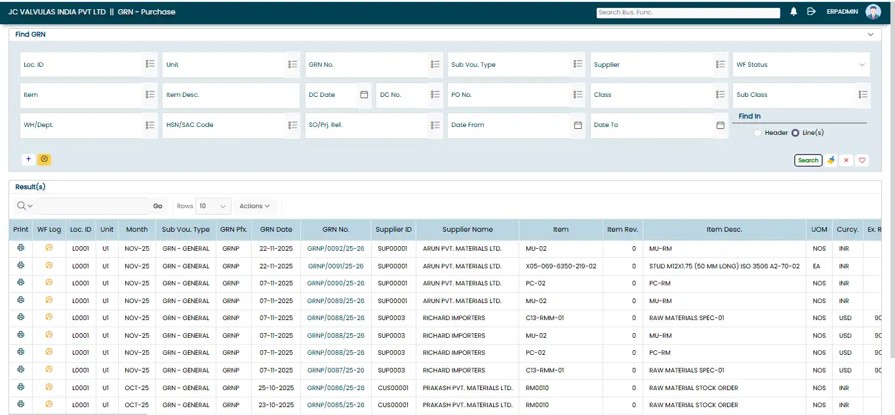
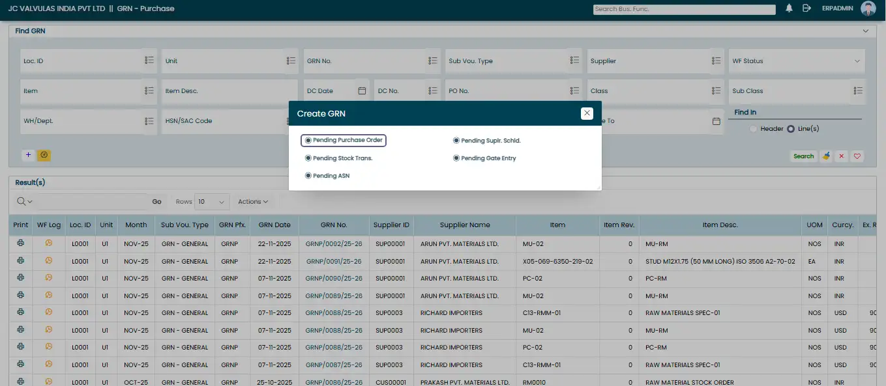
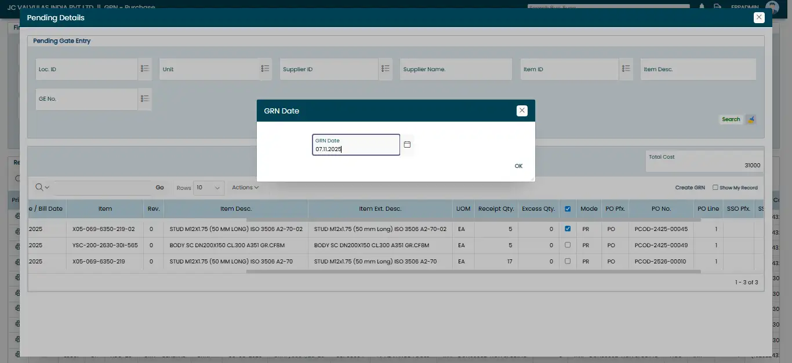
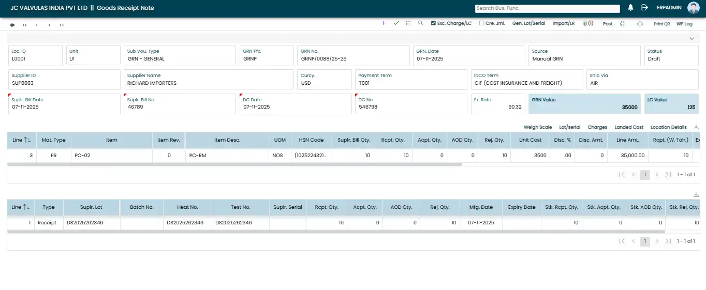

<div data-category="Purchase Order" data-title="Inward (Norm. Mat.)" data-updated="December 01, 2025" data-contributors="RoadmapIT" data-breadcrumb="Home,Purchase Order,Inward (Norm. Mat.)">
  <div class="page-content">
    <p>The Gate entry document created from the Pending Inward screen is displayed in the Inward screen.</p>

    <h5>Navigation path:</h5>
    <p class="fs-6">Supply Chain /Gate Entry/ Transaction / Gate entry(Inward/Outward)</p>

    

    <ul style="list-style-type: none; align-content: center">
      <li class="mouse-icon">Enter the DC date and DC No. if the DC flag is checked for the line.</li>
      <li class="mouse-icon">
        Click on the Post
        <i class="bi bi-check-lg fs-4 mx-1 text-success"></i>
        button to Post the inward document.
      </li>
      <li class="mouse-icon">The document can be cancelled using Cancel button.</li>
    </ul>

    <h2>GRN document created from Pending Gate Entry</h2>
    <p>The goods receipt note for the Purchase or Subcontract order can be created after passing through the Gate Entry. The gate document created will be displayed in the gate entry tab thereby GRN can be created by selecting the document and click on “Create GRN” button.</p>

    

    <ul style="list-style-type: none; align-content: center">
      <li class="mouse-icon">Search screen displays the list of GRN with the relevant details and its status.</li>
      <li class="mouse-icon">Click on search to filter all the records.</li>
      <li class="mouse-icon">User can filter the respective documents by entering the search parameters at the header.</li>
      <li class="mouse-icon">Using search, system displays the results relevant to the search parameters entered.</li>
      <li class="mouse-icon">On -click; the corresponding transaction record will be displayed.</li>
      <li class="mouse-icon">Using  icon, entered search parameters can be cleared.</li>
      <li class="mouse-icon">To close the screen, use <i class="bi bi-x-lg text-danger"></i> icon.</li>
      <li class="mouse-icon">
        By Clicking the
        <i class="bi bi-plus fs-4 mx-2 text-primary"></i>
        Add button we can create new GRN by entering all the mandatory fields displayed in the Add dialog.
      </li>
      <li class="mouse-icon">
        Click
        <i class="bi bi-speedometer2 fs-4 mx-2"></i>
        button to create the GRN from Pending Purchase Orders and Supplier schedule orders.
      </li>
    </ul>

    

    <ul style="list-style-type: none; align-content: center">
      <li class="mouse-icon">Click Pending Purchase Orders button to create GRN from the posted gate entry documents. System navigates to the pending gate documents.</li>
      <li class="mouse-icon">Click Pending Suplr.Schld button to create GRN from the approved supplier schedule Order. System navigates to the pending Supplier schedule Orders.</li>
      <li class="mouse-icon">Click Pending stock Trans. button to create GRN from the approved stock transfer purchase orders. System navigates to the pending Stock transfer purchase Order documents.</li>
      <li class="mouse-icon">Click Pending Gate entry button to create GRN from the posted gate entry documents. System navigates to the pending gate documents.</li>
    </ul>

    

    <ul style="list-style-type: none; align-content: center">
      <li class="mouse-icon">Select the document and enter the GRN Date.</li>
      <li class="mouse-icon">Click on Create GRN button.</li>
      <li class="mouse-icon">Click ok.</li>
    </ul>

    

    <ul style="list-style-type: none; align-content: center">
      <li class="mouse-icon">GRN is created and system navigates to the GRN Entry screen.</li>
    </ul>
  </div>
</div>
